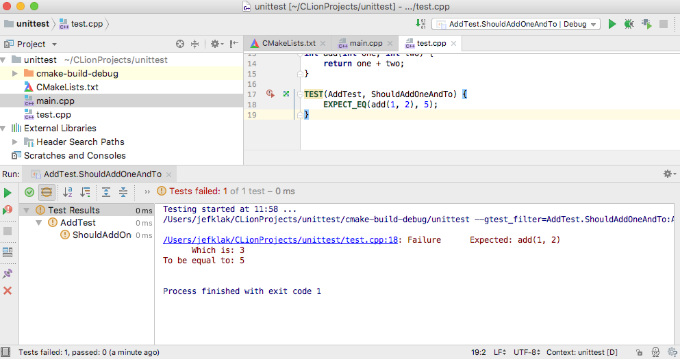
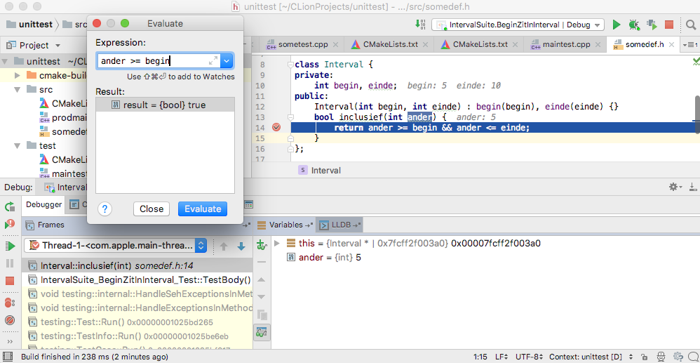

Een programmeertaal als C++ leren vereist het achteroverslaan van heel wat syntaxtische cryptologie als decltype(), template<typename T> en *(x->o). Met programmeren alleen kom je er echter niet: software ontwerpen vereist heel wat meer inzicht dan de juiste code op de juiste plaats typen.
Als software ontwikkelaar ben jij de uitvoerende kracht die vereisten van de klant implementeert in het software systeem. Een analist staat tussen de klant en de ontwikkelaar in die de vertaalslag tussen de grillen van klanten en vereisten in de vorm van business regels maakt.
Het is onze taak als ontwikkelaar om die regels met succes te verwerken in de code. Een software ontwikkelteam bestaat uit meer dan één ontwikkelaar, daarom is het belangrijk dat alles op een uniforme manier geïmplementeerd wordt. Collega’s moeten eenvoudig concepten kunnen localiseren. De source files veranderen immers dagelijks, vaak jaren aan één stuk.
Een analyse document van software uit de interimsector zou er zo kunnen uit zien:
STR006. Gebruikers kiezen zelf het werknemernummer Beschrijving: Als een uitzendkracht over 2 werknemernummers beschikt voor één statuut (statuut is 2x toegevoegd aan de persoonsfiche) dan kan de gebruiker zelf kiezen welk werknemernummer gebruikt moet worden op het contract in kwestie zodat het systeem geen blokkerende melding geeft bij het berekenen van de lonen Context: (meer achtergrond informatie ...) Acceptatiecriteria: - Achter de waarde die nu getoond wordt in het veld statuut op een contract wordt tussen haakjes het werknemernummer toegevoegd dat gekoppeld is aan deze persoon in dit statuut - Wanneer een gebruiker 2x hetzelfde statuut heeft toegevoegd aan zijn persoonsfiche, dan wordt dit statuut 2x getoond in het lijstje met statuten bij de aanmaak van een contract - Bij het kopiëren van het contract wordt het werknemernummer overgenomen van het broncontract - ...
Het is jouw taak als ontwikkelaar om dit document te bestuderen en de criteria te vertalen naar concrete code. Welke aspecten zijn hierin van groot belang?
Welke entiteiten leiden we af uit bovenstaande analyse?
Als woorden als “werknemer” en “persoon” (“persoonsfiche”) door elkaar gebruikt worden zal je de analist hierop moeten aanspreken en dit uitklaren. Iedereen moet bij het woord “werknemer” onmiddellijk aan hetzelfde denken.
Welke relaties hebben de entiteiten?
Welke acties kan men met de entiteiten uitvoeren?
Gegeven bovenstaande modellen extraheren we de volgende C++ klassen definities en methodes:
class Statuut {
public:
Statuut();
}
class Werknemer {
private:
std::vector<Statuut> statuten;
int nummer;
public:
Werknemer();
void koppelAan(const Statuut& statuut);
}
class Contract {
public:
Contract();
Contract Kopieer() {}
}Productie code leeft véél langer dan je gemiddeld project op de universiteit, afhankelijk van de sector en de grootte van het project. Het kan goed zijn dat er nog 10 jaar lang verder gewerkt wordt aan één pakket. Dat betekent dat het van enorm belang is om ordelijk en doordacht tewerk te gaan.
Besef dat doorheen de jaren compilers komen en gaan en standaarden komen en gaan. C++11 is van 2011 geleden, De C++17 standaard introduceert weer een hele hoop nieuwigheden, en C++20 is onderweg, die we niet gaan behandelen maar misschien wel in dat project kunnen toegevoegd worden.
Flexibiliteit naar onderhoud toe is belangrijk voor de succes van een project op lange termijn.
Source Control is een sleutelbegrip voor ontwikkelteams. Het stelt iedereen in staat om aan dezelfde source file te werken zonder bestanden op- en neer te sturen, voorziet backups, maakt het mogelijk om releases en branches uit te rollen, …
Vanaf nu wordt verondersteld dat labo oefeningen gecommit worden in git op Github: een zeer populair open source software ontwikkelingsplatform dat gebruiksvriendelijk is. Het Pro Git handboek leert je alles over de werking van git. Een typische workflow is als volgt:
git clone [url]: Maakt een lokale repository aan die je op Github hebt gecreëerd. Het commando maakt een subdirectory aan.git status en git diff: Bekijk lokale changes voordat ze naar de server gaan.git add [.]: Geef aan welke changes staged worden voor commitgit commit -m [comment]: commit naar je lokale repository.git push: push lokale commits naar de Github server.git pull: pull remote changes naar je lokale repository.De output van git status ziet er zo uit:
Wouters-MacBook-Air:brainbaking wgroenev$ git status On branch master Your branch is up-to-date with 'origin/master'. Changes not staged for commit: (use "git add/rm..." to update what will be committed) (use "git checkout -- ..." to discard changes in working directory) modified: content/teaching/cpp/labo-1.md modified: content/teaching/cpp/labo-2.md modified: content/teaching/cpp/labo-3.md modified: content/teaching/cpp/labo-4.md modified: content/teaching/cpp/labo-5.md modified: content/teaching/cpp/labo-6.md deleted: docs/CNAME deleted: docs/essays/i-am-jealous-of-my-dog/index.html
De output van git diff ziet er zo uit:
Wouters-MacBook-Air:brainbaking wgroenev$ git diff
diff --git a/content/teaching/cpp/labo-1.md b/content/teaching/cpp/labo-1.md
index 654a4f6..11f0597 100644
--- a/content/teaching/cpp/labo-1.md
+++ b/content/teaching/cpp/labo-1.md
@@ -4,7 +4,7 @@ accent: "#008eb3"
disableComments: true
---
-« [Terug naar Software ontwerp in C/C++ met Qt](/teaching/cpp)
+« [Terug naar Software ontwerp in C/C++](/teaching/cpp)
» [Naar de labo opgave](#oef)
Een quote uit het Clean Code boek van Robert C. Martin verduidelijkt het woordgebruik:
Even bad code can function. But if code isn t clean, it can bring a development organization to its knees. Every year, countless hours and significant resources are lost because of poorly written code. But it doesn t have to be that way.
Raadpleeg het boek Clean Code voor meer informatie.
Inderdaad, slechte code compileert ook en wordt ook uitgevoerd, maar dit komt onderhoudbaarheid helemaal niet ten goede. Er is voor “Modern C++” (C++11) zelfs een aparte clean-cpp blog toegeweid aan proper C++ gebruik.
Een voorbeeld ter verduidelijking:
void process(Cl &c, int times) {
for(int i = 0; i < times; i++) {
if(login(c.user, c.pass)) { break;
} wait();
}
}Dit is een simpele functie, maar zie jij op het eerste zicht wat dit doet?
void tryToLoginAmountOfTimes(const User &user, int maxTimes) {
for(int i = 0; i < maxTimes; i++) {
if(user.tryToLogin()) {
return;
}
wait();
}
}Subtiele verschillen maken vaak een wereld van verschil:
const.break worden vermeden.login bij de gebruiker klasse kan horen?Kritisch denken brengt je een heel eind. Wees streng genoeg: stel constant de vraag “is dit wel nodig?”. maxTimes is bijvoorbeeld nutteloos als de methode altijd aangeroepen wordt met eenzelfde constante waarde.
Een laatste voorbeeld uit de realiteit gegrepen:
PermissionItem CreatePermission(const std::string& key, bool visible, const DBType type = DBType.Default) { }
// gebruik:
auto pi1 = CreatePermission("some_key", true);
auto pi2 = CreatePermission("bla_key", false, DBType.Default);
PermissionItem CreateVisiblePermission(const std::string& key) { }
PermissionItem CreateInvisiblePermission(const std::string& key) { }
// gebruik:
auto pi1 = CreateVisiblePermission("some_key");
auto pi2 = CreateInvisiblePermission("bla_key");
Het verschil is hemel en aarde:
bool flags! Vergeet niet dat de methode definitie ergens in een header file leeft en er naar navigeren om te begrijpen wat welk argument doet véél tijd kost.Zie ook de verkorte Clean Code cursus slides.
Hoe weet ik of mijn feature in de software wel werkt?
Door het te testen.
De eenvoudigste manier waarop je tot nu toe altijd tewerk bent gegaan is een vorm van “acceptatie testen”: het programma simpelweg proberen opstarten en navigeren tot waar je de code wijziging hebt doorgevoerd. Dit werkt natuurlijk, maar brengt een aantal nadelen met zich mee:
Natuurlijk veronderstelt men dat je tenminste één keer je programma end-to-end hebt doorlopen om controles uit te voeren, maar niet constant bij het schrijven van elke nieuwe lijn code. Wat zijn de alternatieven?
Een mogelijkheid is cout << var << endl rondstrooien, hopelijk met een of andere vorm van #ifdef _DEBUG, maar zoals Peter Ritchie zegt: “If You’re Using “#if DEBUG”, You’re Doing it Wrong”.
Herinner je de belangrijkheid van Clean Code. Je Code is alles behalve Clean als het vol staat met debug statements om te controleren of een variabele een bepaalde state heeft dat jij niet kan achterhalen. Daar dient de debugger zelf voor (zie later).
Met een “unit test” automatiseer je in feite een klein stuk van een acceptatie scenario dat je zelf samenstelt. Met frameworks als Google Test schrijf je in code wat je verwacht dat bepaalde functies teruggeven in termen van gedrag:
int Factorial(int n); // Returns the factorial of n
// Tests factorial of 0.
TEST(FactorialTest, HandlesZeroInput) {
EXPECT_EQ(Factorial(0), 1);
}
// Tests factorial of positive numbers.
TEST(FactorialTest, HandlesPositiveInput) {
EXPECT_EQ(Factorial(1), 1);
EXPECT_EQ(Factorial(2), 2);
EXPECT_EQ(Factorial(3), 6);
EXPECT_EQ(Factorial(8), 40320);
}Google Test is deel van het xUnit framework dat we kennen in de Java wereld van JUnit. Zie bovenstaande link voor assertion documentatie. Download De laatste Google Test Release op Github.

Volg de volgende stappen:
cd googletestmkdir build in de map googletestcd build && cmake ./../make. Dit geeft libgtest.a en libgtest_main.ainclude_directories()target_link_libraries()$GTEST_DIR.Het CMakeLists.txt ziet er dan als volgt uit:
cmake_minimum_required(VERSION 3.10)
project(unittest)
SET(google_test_dir "/Users/wgroenev/CLionProjects/googletest-release-1.8.0/googletest")
include_directories(${google_test_dir}/include)
set(CMAKE_CXX_STANDARD 11)
add_executable(unittest main.cpp test.cpp)
target_link_libraries(unittest ${google_test_dir}/build/libgtest.a ${google_test_dir}/build/libgtest_main.a)
Merk op dat we googlemock achterwege laten, de repository bevat 2 test frameworks. Om testen uit te voeren heb je een main functie nodig die google test opstart:
// main.cpp
#include "gtest/gtest.h"
int main(int argc, char *argv[]) {
::testing::InitGoogleTest(&argc, argv);
return RUN_ALL_TESTS();
}De testen in de screenshot leven in test.cpp:
// test.cpp
#include "gtest/gtest.h"
int add(int one, int two) {
return one + two;
}
class SuiteName : public ::testing::Test {
// setup en teardown hier
};
// gebruik bovenstaande suite
TEST_F(SuiteName, TrueIsTrue) {
EXPECT_TRUE(true);
}
// losstaande test
TEST(AddTest, ShouldAddOneAndTo) {
EXPECT_EQ(add(1, 2), 5);
}Bovenstaande procedure moet je ook volgen los van CLion. De binary die uit het build proces komt voert alle testen uit (zie main code). Testen worden commandline uitgevoerd:
Wouters-MacBook-Air:unittest wgroenev$ ./cmake-build-debug/unittest
[==========] Running 2 tests from 2 test cases.
[----------] Global test environment set-up.
[----------] 1 test from SuiteName
[ RUN ] SuiteName.TrueIsTrue
[ OK ] SuiteName.TrueIsTrue (0 ms)
[----------] 1 test from SuiteName (0 ms total)
[----------] 1 test from AddTest
[ RUN ] AddTest.ShouldAddOneAndTo
/Users/wgroenev/CLionProjects/unittest/test.cpp:18: Failure
Expected: add(1, 2)
Which is: 3
To be equal to: 5
[ FAILED ] AddTest.ShouldAddOneAndTo (0 ms)
[----------] 1 test from AddTest (0 ms total)
[----------] Global test environment tear-down
[==========] 2 tests from 2 test cases ran. (0 ms total)
[ PASSED ] 1 test.
[ FAILED ] 1 test, listed below:
[ FAILED ] AddTest.ShouldAddOneAndTo
1 FAILED TEST
Enkele verbeterpunten:
src en een map test, en build 2 binaries. Download hier een voorbeeld met opgesplitste CMake files.Een bug oplossen betekent niet dat deze bug nooit meer kan voorkomen. Zeker wanneer je met meerdere mensen aan dezelfde source code werkt, kan het zijn dat per ongeluk bepaalde wijzigingen de bug laten terugkomen. Dit noemt men “regressie” en is een hel voor klanten die betalen voor software!
Regressie is eenvoudig tegen te gaan met unit testen. Een test die faalt alarmeert onmiddellijk iemand dat bepaalde verwachte functionaliteit niet meer werkt. Een geïntegreerde build server zorgt voor het automatisch opvolgen van die testen.
Gegeven de volgende klasse:
class Interval {
private:
int begin, einde;
public:
Interval(int begin, int einde) : begin(begin), einde(einde) {}
bool inclusief(int ander) {
return ander > begin && ander <= einde;
}
};We verwachten dat voor een interval [5-10] de getallen 5 en 10 ook nog in die range zitten. Dit zijn de testen voor de functie inclusief():
class IntervalSuite : public ::testing::Test {
protected:
Interval *interval;
protected:
virtual void TearDown() {
delete interval;
}
virtual void SetUp() {
interval = new Interval(5, 10);
}
};
TEST_F(IntervalSuite, BeginZitInInterval) {
ASSERT_TRUE(interval->inclusief(5));
}
TEST_F(IntervalSuite, EindeZitInInterval) {
ASSERT_TRUE(interval->inclusief(10));
}
TEST_F(IntervalSuite, GetalTussenBeginEnEindeZitInInterval) {
ASSERT_TRUE(interval->inclusief(7));
}
TEST_F(IntervalSuite, GetalGroterDanEindeZitNietInInterval) {
ASSERT_FALSE(interval->inclusief(70));
}
TEST_F(IntervalSuite, GetalKleinerDanBeginZitNietInInterval) {
ASSERT_FALSE(interval->inclusief(2));
}Waarvan BeginZitInInterval faalt. Verander in de implementatie > door >= en de suite zorgt er voor dat deze code altijd correct is.
De stack bekijken, lokale variabelen inspecteren, … kennen we van IDEs als NetBeans of IntelliJ. In CLion is dit exact hetzelfde. Zet een breakpoint in productie code en stap er door met de ingebouwde debugging tools:

De compiler toolchain voorziet een commandline debugger gdb. Daarvoor moet je debug informatie genereren bij compilatie met g++ flag -g. De tool is vrij rudimentair in gebruik. Zie documentatie voor informatie rond commando’s.
Er wordt verwacht aan unit testen te denken voor (simpele) logica. Experimenteer dus eerst met Google Test en probeer de voorbeelden op deze pagina zelf. Maak voor de oefeningen een nieuwe Github repository aan, of een nieuwe submap in een bestaande als dat al gebeurd is.
operator + methode, die een nieuw interval berekent door de som te nemen van beide intervallen. [3, 7] + [4, 9] = [3, 9]. TEST_F(Suite, TestNaam) de test naam niet tussen quotes moet?*Interval een pointer en geen gewone instance van de klasse Interval? In dat geval hoeven we toch geen delete uit te voeren en is de tear down methode irrelevant…